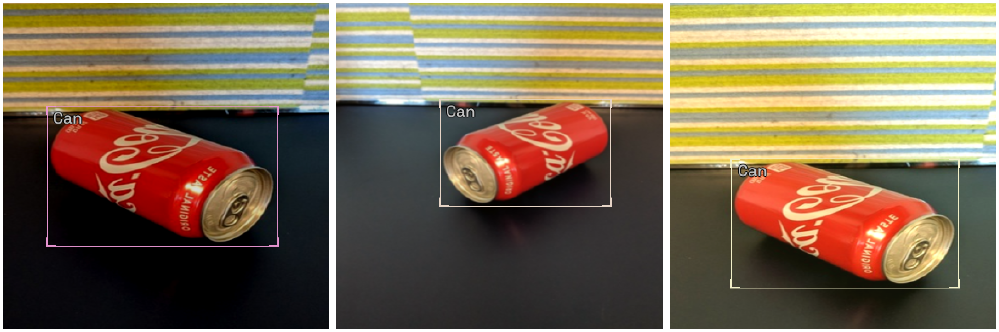
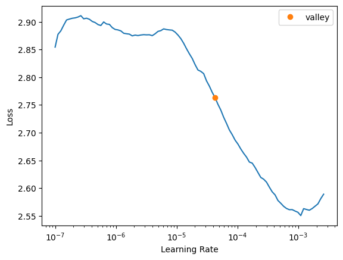
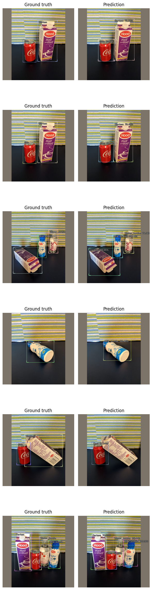

Using Swin Transformer as backbone in IceVision
Exciting News: Now you can use both VFNet and RetinaNet with 3 different pretrained Swin Transformer backbones.
Spectacular results with VFNet. COCO metric reached 66% vs 34% for RetinaNet when training the Fridge Object Dataset
Both the neck (FPN) and the head are trained from scratch!

Introduction
Swin Transformer currently holds state-of-the-art results in prominent computer vision benchmark datasets:
- Image classification: 87.3 top-1 accuracy on ImageNet-1K
- Object detection: 58.7 box AP and 51.1 mask AP on COCO testdev
- Semantic segmentation: 53.5 mIoU on ADE20K val
Its performance surpasses the previous state-of-theart by a large margin of +2.7 box AP and +2.6 mask AP on COCO, and +3.2 mIoU on ADE20K, demonstrating the potential of Transformer-based models as vision backbones.
IceVision now supports using Swin Transformer as backbone for some models.
In this tutorial, you will learn how to:
1. Use the IceVision mmdet models with the Swin Transformer as backbone
2. Instantiate the model, and then train it with both the fastai and pytorch lightning engines.
3. And finally, use the model to identify objects in images.
Install IceVision and IceData
The following downloads and runs a short shell script. The script installs IceVision, IceData, the MMDetection library, and Yolo v5 as well as the fastai and pytorch lightning engines.
Install from pypi...
# # Torch - Torchvision - IceVision - IceData - MMDetection - YOLOv5 - EfficientDet Installation
# !wget https://raw.githubusercontent.com/airctic/icevision/master/icevision_install.sh
# # Choose your installation target: cuda11 or cuda10 or cpu
# !bash icevision_install.sh cuda11
... or from icevision master
# Torch - Torchvision - IceVision - IceData - MMDetection - YOLOv5 - EfficientDet Installation
!wget https://raw.githubusercontent.com/airctic/icevision/master/icevision_install.sh
# Choose your installation target: cuda11 or cuda10 or cpu
!bash icevision_install.sh cuda11 master
# Restart kernel after installation
import IPython
IPython.Application.instance().kernel.do_shutdown(True)
Imports
All of the IceVision components can be easily imported with a single line.
from icevision.all import *
Download and prepare a dataset
Now we can start by downloading the Fridge Objects dataset. This tiny dataset contains 134 images of 4 classes: - can, - carton, - milk bottle, - water bottle.
IceVision provides methods to load a dataset, parse annotation files, and more.
For more information about how the fridge dataset as well as its corresponding parser, check out the fridge folder in icedata.
# Download the dataset
url = "https://cvbp-secondary.z19.web.core.windows.net/datasets/object_detection/odFridgeObjects.zip"
dest_dir = "fridge"
data_dir = icedata.load_data(url, dest_dir)
Parse the dataset
The parser loads the annotation file and parses them returning a list of training and validation records. The parser has an extensible autofix capability that identifies common errors in annotation files, reports, and often corrects them automatically.
The parsers support multiple formats (including VOC and COCO). You can also extend the parser for additional formats if needed.
The record is a key concept in IceVision, it holds the information about an image and its annotations. It is extensible and can support other object formats and types of annotations.
# Create the parser
parser = parsers.VOCBBoxParser(annotations_dir=data_dir / "odFridgeObjects/annotations", images_dir=data_dir / "odFridgeObjects/images")
# Parse annotations to create records
train_records, valid_records = parser.parse()
parser.class_map
0%| | 0/128 [00:00<?, ?it/s]
[1m[1mINFO [0m[1m[0m - [1m[34m[1mAutofixing records[0m[1m[34m[0m[1m[0m | [36micevision.parsers.parser[0m:[36mparse[0m:[36m122[0m
0%| | 0/128 [00:00<?, ?it/s]
<ClassMap: {'background': 0, 'carton': 1, 'milk_bottle': 2, 'can': 3, 'water_bottle': 4}>
Creating datasets with augmentations and transforms
Data augmentations are essential for robust training and results on many datasets and deep learning tasks. IceVision ships with the Albumentations library for defining and executing transformations, but can be extended to use others.
For this tutorial, we apply the Albumentation's default aug_tfms to the training set. aug_tfms randomly applies broadly useful transformations including rotation, cropping, horizontal flips, and more. See the Albumentations documentation to learn how to customize each transformation more fully.
The validation set is only resized (with padding).
We then create Datasets for both. The dataset applies the transforms to the annotations (such as bounding boxes) and images in the data records.
# Transforms
image_size = 384
train_tfms = tfms.A.Adapter([*tfms.A.aug_tfms(size=image_size, presize=512), tfms.A.Normalize()])
valid_tfms = tfms.A.Adapter([*tfms.A.resize_and_pad(image_size), tfms.A.Normalize()])
# Datasets
train_ds = Dataset(train_records, train_tfms)
valid_ds = Dataset(valid_records, valid_tfms)
Understanding the transforms
The Dataset transforms are only applied when we grab (get) an item. Several of the default aug_tfms have a random element to them. For example, one might perform a rotation with probability 0.5 where the angle of rotation is randomly selected between +45 and -45 degrees.
This means that the learner sees a slightly different version of an image each time it is accessed. This effectively increases the size of the dataset and improves learning.
We can look at result of getting the 0th image from the dataset a few times and see the differences. Each time you run the next cell, you will see different results due to the random element in applying transformations.
# Show an element of the train_ds with augmentation transformations applied
samples = [train_ds[0] for _ in range(3)]
show_samples(samples, ncols=3)

Select a library, model, and backbone
In order to create a model, we need to: * Choose one of the libraries supported by IceVision * Choose one of the models supported by the library * Choose one of the backbones corresponding to a chosen model
You can access any supported models by following the IceVision unified API, use code completion to explore the available models for each library.
Creating a model
Presently IceVision only supports the mmdet implementation of RetinaNet and VFNet (for object detection) and MaskRCNN (for instance segmentation) to use the Swin Transformer backbone. The model and backbone can be selected as follows:
model_type = models.mmdet.vfnet
backbone = model_type.backbones.swin_t_p4_w7_fpn_1x_coco
There are currently 3 available backbones namely swin_t_p4_w7_fpn_1x_coco,swin_s_p4_w7_fpn_1x_coco and swin_b_p4_w7_fpn_1x_coco.
# Just change the value of selection to try another model
selection = 0
extra_args = {}
if selection == 0:
model_type = models.mmdet.vfnet
backbone = model_type.backbones.swin_t_p4_w7_fpn_1x_coco
if selection == 1:
model_type = models.mmdet.retinanet
backbone = model_type.backbones.swin_s_p4_w7_fpn_1x_coco
if selection == 2:
model_type = models.mmdet.vfnet
backbone = model_type.backbones.swin_b_p4_w7_fpn_1x_coco
model_type, backbone, extra_args
backbone.__dict__
Now it is just a one-liner to instantiate the model. If you want to try another option, just edit the line at the top of the previous cell.
# Instantiate the model
model = model_type.model(backbone=backbone(pretrained=True), num_classes=len(parser.class_map), **extra_args)
The current Swin Transformer implementation only provides pretrained weights for the backbone.
Note: For the Swin Transformer model
pretrained=Trueindicates that only the backbone is pretrained. The neck and the head of the model will be trained from scratch.
Data Loader
The Data Loader is specific to a model_type. The job of the data loader is to get items from a dataset and batch them up in the specific format required by each model. This is why creating the data loaders is separated from creating the datasets.
We can take a look at the first batch of items from the valid_dl. Remember that the valid_tfms only resized (with padding) and normalized records, so different images, for example, are not returned each time. This is important to provide consistent validation during training.
# Data Loaders
train_dl = model_type.train_dl(train_ds, batch_size=8, num_workers=4, shuffle=True)
valid_dl = model_type.valid_dl(valid_ds, batch_size=8, num_workers=4, shuffle=False)
# show batch
model_type.show_batch(first(valid_dl), ncols=4)

Metrics
The fastai and pytorch lightning engines collect metrics to track progress during training. IceVision provides metric classes that work across the engines and libraries.
The same metrics can be used for both fastai and pytorch lightning.
metrics = [COCOMetric(metric_type=COCOMetricType.bbox)]
Training
IceVision is an agnostic framework meaning it can be plugged into other DL learning engines such as fastai2, and pytorch-lightning.
Training using fastai
learn = model_type.fastai.learner(dls=[train_dl, valid_dl], model=model, metrics=metrics)
learn.lr_find(end_lr=0.005)
SuggestedLRs(valley=4.279797212802805e-05)

learn.fine_tune(20, 1e-4, freeze_epochs=1)
| epoch | train_loss | valid_loss | COCOMetric | time |
|---|---|---|---|---|
| 0 | 2.715207 | 2.318473 | 0.079426 | 00:03 |
| epoch | train_loss | valid_loss | COCOMetric | time |
|---|---|---|---|---|
| 0 | 2.378009 | 2.299067 | 0.043078 | 00:04 |
| 1 | 2.305085 | 2.170340 | 0.081073 | 00:04 |
| 2 | 2.240926 | 2.094887 | 0.142760 | 00:04 |
| 3 | 2.171739 | 2.070704 | 0.239026 | 00:04 |
| 4 | 2.124321 | 1.890665 | 0.315633 | 00:04 |
| 5 | 2.068015 | 1.825514 | 0.433803 | 00:04 |
| 6 | 2.004862 | 1.739451 | 0.419219 | 00:04 |
| 7 | 1.948798 | 1.746644 | 0.406612 | 00:04 |
| 8 | 1.900563 | 1.639521 | 0.513550 | 00:04 |
| 9 | 1.848227 | 1.623993 | 0.496804 | 00:04 |
| 10 | 1.803940 | 1.603808 | 0.550723 | 00:04 |
| 11 | 1.767351 | 1.545463 | 0.501292 | 00:04 |
| 12 | 1.725547 | 1.519361 | 0.598455 | 00:04 |
| 13 | 1.687097 | 1.539462 | 0.545318 | 00:04 |
| 14 | 1.658265 | 1.403311 | 0.653802 | 00:04 |
| 15 | 1.626446 | 1.466561 | 0.641094 | 00:04 |
| 16 | 1.593588 | 1.378689 | 0.674150 | 00:04 |
| 17 | 1.570487 | 1.356180 | 0.644711 | 00:04 |
| 18 | 1.551844 | 1.396569 | 0.623112 | 00:04 |
| 19 | 1.533261 | 1.419828 | 0.624261 | 00:04 |
In our tests, the VFNet + Swin-T backbone scored over 66% on the COCOMetric for this dataset. Not bad at all for a model with an untrained neck and head!
Training using Pytorch Lightning
class LightModel(model_type.lightning.ModelAdapter):
def configure_optimizers(self):
return Adam(self.parameters(), lr=1e-4)
light_model = LightModel(model, metrics=metrics)
trainer = pl.Trainer(max_epochs=5, gpus=1)
trainer.fit(light_model, train_dl, valid_dl)
GPU available: True, used: True
TPU available: False, using: 0 TPU cores
IPU available: False, using: 0 IPUs
LOCAL_RANK: 0 - CUDA_VISIBLE_DEVICES: [0]
| Name | Type | Params
--------------------------------
0 | model | VFNet | 36.2 M
--------------------------------
36.2 M Trainable params
0 Non-trainable params
36.2 M Total params
144.622 Total estimated model params size (MB)
Validation sanity check: 0it [00:00, ?it/s]
Training: 0it [00:00, ?it/s]
Validating: 0it [00:00, ?it/s]
Validating: 0it [00:00, ?it/s]
Validating: 0it [00:00, ?it/s]
Validating: 0it [00:00, ?it/s]
Validating: 0it [00:00, ?it/s]
Using the model - inference and showing results
The first step in reviewing the model is to show results from the validation dataset. This is easy to do with the show_results function.
model_type.show_results(model, valid_ds, detection_threshold=.5)

Prediction
Sometimes you want to have more control than show_results provides. You can construct an inference dataloader using infer_dl from any IceVision dataset and pass this to predict_dl and use show_preds to look at the predictions.
A prediction is returned as a dict with keys: scores, labels, bboxes, and possibly masks.
Prediction functions that take a detection_threshold argument will only return the predictions whose score is above the threshold.
Prediction functions that take a keep_images argument will only return the (tensor representation of the) image when it is True. In interactive environments, such as a notebook, it is helpful to see the image with bounding boxes and labels applied. In a deployment context, however, it is typically more useful (and efficient) to return the bounding boxes by themselves.
NOTE: For a more detailed look at inference check out the inference tutorial
infer_dl = model_type.infer_dl(valid_ds, batch_size=4, shuffle=False)
preds = model_type.predict_from_dl(model, infer_dl, keep_images=True)
show_preds(preds=preds[:4])
0%| | 0/7 [00:00<?, ?it/s]

Happy Learning!
If you need any assistance, feel free to join our forum.